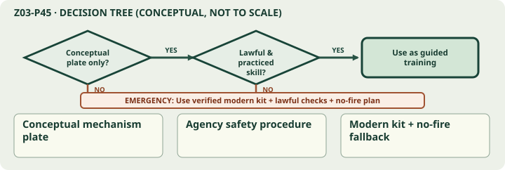

Z03-P45 · Fire and ignition · Adapted historical material
Distinguish conceptual ignition schematics from field-validated procedures
Interpret encyclopedia mechanism diagrams accurately without treating conceptual plates as guaranteed field ignition specs.
When it applies · All readers and reviewers evaluating traditional and modern ignition cards across Z03 and retained historical Track B plates.
Equipment · Card evidence drawer, historical Track B crosswalk and local qualified instructor for any hands-on progression.

Actions
- Separate conceptual mechanism illustrations (showing how components interact—such as flint-and-steel spark paths or bow-drill dust heating) from field-validated emergency procedures backed by agency safety standards.[C10, C12, ED]
- Preserve historical Track B plates (B007, B008, B010) in their separate frozen archive paths without misreading unscaled drawings or staged photos as species IDs, fixed dimensions or guaranteed ignition times.[C10, C12, ED]
- For real emergencies, prioritize verified modern redundant ignition (dry lighter, stormproof matches, ferro rod) paired with lawful site checks and a complete no-fire insulation plan.[C11, C01, C08]
Failure recognition · Treating a conceptual bow-drill schematic as an easy zero-gear field substitute for carrying dry waterproof ignition and warm layers.[C12, C11, C08]
Verify · Check every card's evidence drawer and review footer to confirm whether a diagram depicts conceptual mechanics, agency safety rules or pending specialist review.[ED, C10, C12]
Stop or change course · Never attempt an unpracticed historical ignition method as your sole warmth plan in cold or wet conditions; prioritize exposure control and emergency signaling.[C08, C12, T06]
Evidence and editorial notes
- C01 · Minnesota DNR · Fire Danger and Burning Restrictions (current web edition; verify at use)
- Section: Fire danger and burning restrictions map and links · Conditions: Current Minnesota location, date and jurisdiction
Support: Check current restrictions and local authority requirements before lighting.
Limitations: Restrictions can change daily with humidity, wind, and drought; verify immediately before use. · Conflicting evidence: None; local jurisdiction always supersedes general notes.
Editorial note: Mandatory legal check before any live fire card. · Specialist reviewer: Fire prevention and local land management
Primary source · checked 2026-11-24 - C08 · NWS · What To Do If You're Caught in a Winter Storm (current web edition)
- Section: Outside > If there is no shelter nearby · Conditions: Stranded outdoors during a winter storm
Support: Seek shelter and block wind and wet exposure. Reduce heat loss from contact with snow or ground.
Limitations: Does not guarantee overnight survival without adequate insulation or rescue. · Conflicting evidence: None; reinforces no-fire exposure control priority.
Editorial note: Anchors no-fire fallback when ignition fails or is banned. · Specialist reviewer: Cold-weather shelter specialist
Primary source · checked 2026-11-24 - C10 · NPS · Flint and Steel at Pipe Spring National Monument (2015-02-24)
- Section: What > Firemaking with flint and steel · Conditions: Historical hard stone and suitable steel demonstration
Support: With traditional flint-and-steel, the flint removes small particles of steel that oxidize in air; a receptive tinder material catches the hot particles.
Limitations: Requires high-carbon steel and sharp hard rock (e.g., chert/flint); random unknown rocks fail and can fracture dangerously. · Conflicting evidence: Corrects common misconception that sparks come from the rock itself.
Editorial note: Used for mechanism diagrams and cold-inspection teaching cards. · Specialist reviewer: Fire prevention and materials mechanics
Primary source · checked 2026-11-24 - C11 · NPS · Ten Essentials (current web edition)
- Section: Fire and illumination · Conditions: Outdoor emergency kit
Support: Carry a dependable ignition option and protect it from moisture. Carry a separate light.
Limitations: Disposable butane lighters lose vapor pressure in freezing cold; matches fail when damp. · Conflicting evidence: None; supports redundant dry ignition kit planning.
Editorial note: Keeps lighting independent of fire-building. · Specialist reviewer: Field equipment and fire prevention
Primary source · checked 2026-11-24 - C12 · NPS · Forces and Tools (current web edition)
- Section: Background and Procedure > Bow Drill · Conditions: Interpretive demonstration using known materials
Support: Reciprocating motion turns a spindle against a hearth. Friction heats wood dust until it can sustain an ember.
Limitations: Moisture, resinous wood, poor notch geometry, or physical fatigue can prevent ember formation. · Conflicting evidence: Does not guarantee ignition in emergency field conditions; conceptual/supervised training only.
Editorial note: Clearly distinguishes cold mechanism instruction from field-validated emergency ignition. · Specialist reviewer: Fire prevention and mechanism reviewer
Primary source · checked 2026-11-24 - T06 · NPS · Outdoor Emergency Plan (current web edition)
- Section: If you get lost or hurt; call for help · Conditions: Outdoor US emergency
Support: Communicate location, last known point, situation and needs. Stay put when unable to establish a safe route unless immediate danger requires movement.
Limitations: Cell signal is unreliable in backcountry terrain; pre-trip plans bridge communication gaps. · Conflicting evidence: None; core lost-person decision rule.
Editorial note: Foundation for stay/signal/move and dispatch handoff cards. · Specialist reviewer: Search and rescue
Primary source · checked 2026-11-24
Source lineage · B008/B010 historical archive and editorial governance; new manuscript · Classification · Adapted historical material.